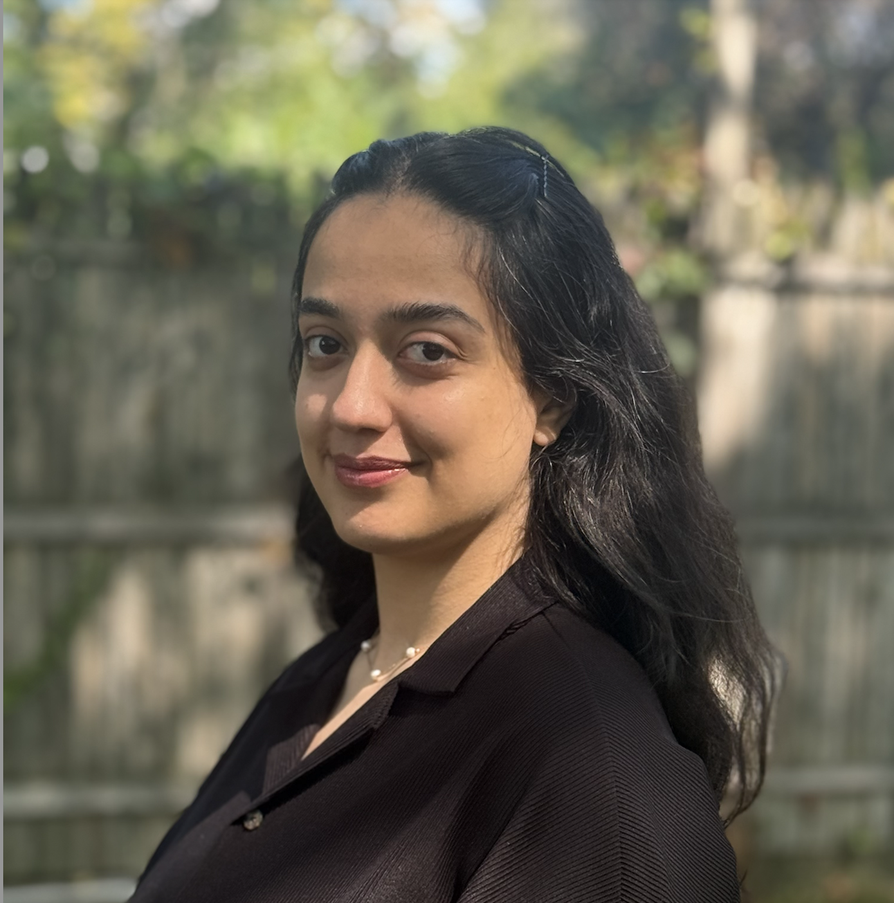

As AI becomes embedded in critical decision workflows, understanding and mitigating the effects of human attention constraints is increasingly important. My work addresses a fundamental and timely challenge in modern AI-enabled systems: how a human decision-maker should optimally allocate limited cognitive attention across multiple, continuously arriving, and noisy information sources, many of which are increasingly generated or mediated by AI systems. These results provide fundamental insights into how bounded rationality and information constraints shape long-horizon decision behavior.
Spring 2023: Ph.D. in Electrical Engineering, Binghamton University, USA
2018-2021: M.S. in Control Engineering, University of Isfahan, Iran
2014-2018: B.S. in Electrical Engineering, University of Kashan, Iran
H. Arefanjazi, M. Ataei, M. Ekramian, and A. Montazeri, “A robust distributed observer design for Lipschitz nonlinear systems with time-varying switching topology,” Journal of the Franklin Institute, vol. 360, no. 14, pp. 10728–10744, 2023. Franklin
H. Arefanjazi and E. Akyol, “On Myopia in Rationally Inattentive Dynamic Information Acquisition,” in Annual Allerton Conference on Communication, Control, and Computing, Monticello, IL, USA, 2025. Allerton
H. Arefanjazi and E. Akyol, “Dynamic Information Acquisition Under Rational Inattention,” in American Control Conference, 2026.